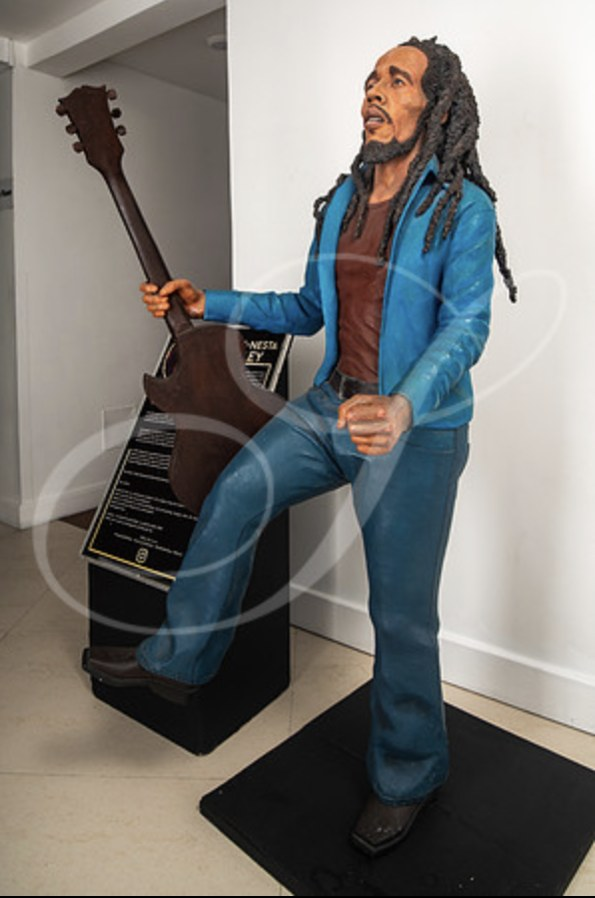
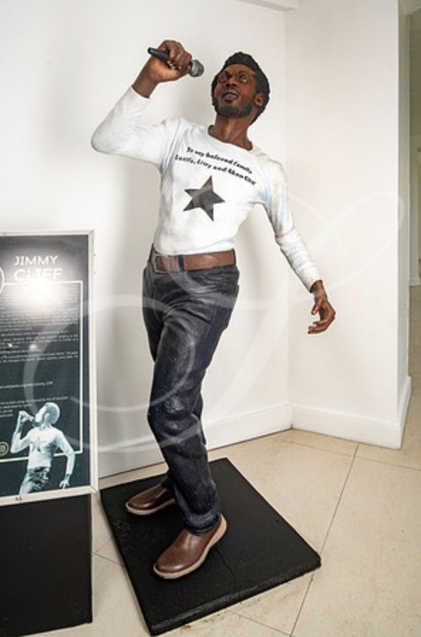
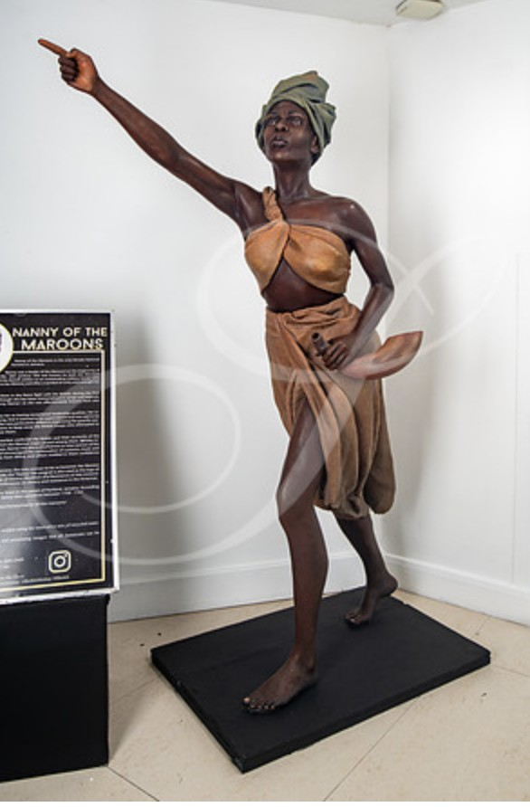
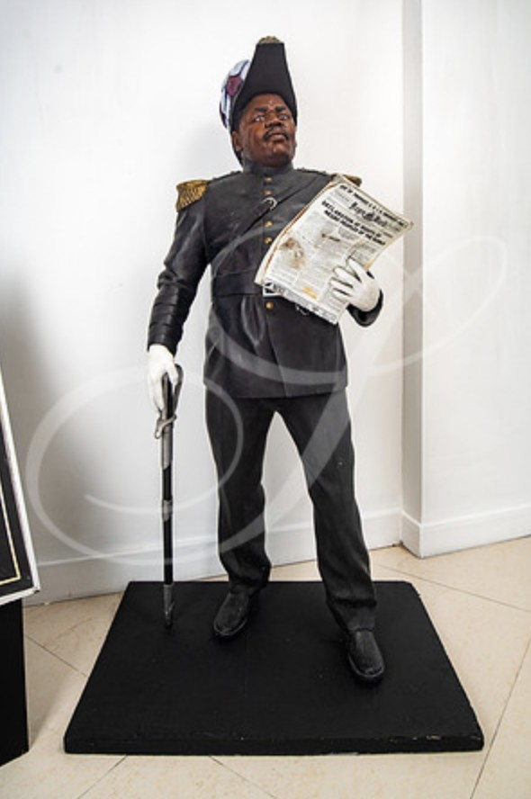
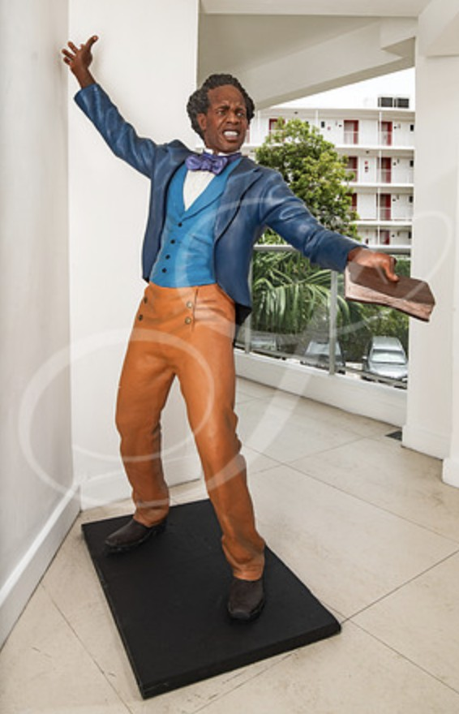

S Hotel · Montego Bay · 2013
Icons &
National Memory.
Life-like sculptural portraiture bringing Jamaican heroes and cultural figures into public space.

The project
History given
physical presence.
At Montego Bay's Legends Circle, sculptural representations of National Heroes Samuel Sharpe and Marcus Garvey, National Heroine Nanny of the Maroons, and music legends Bob Marley and Jimmy Cliff create a public encounter with Jamaican identity.
The works combine Cole's commitment to realism with recycled-material innovation, making cultural memory visible, approachable and part of everyday public life.
Portraits
Faces of Jamaican heritage.





Related portrait
Explore Miss LouA separate portrait by Scheed Cole celebrating Louise Bennett-Coverley, linked by the shared theme of Jamaican cultural memory.
Culture & heritage